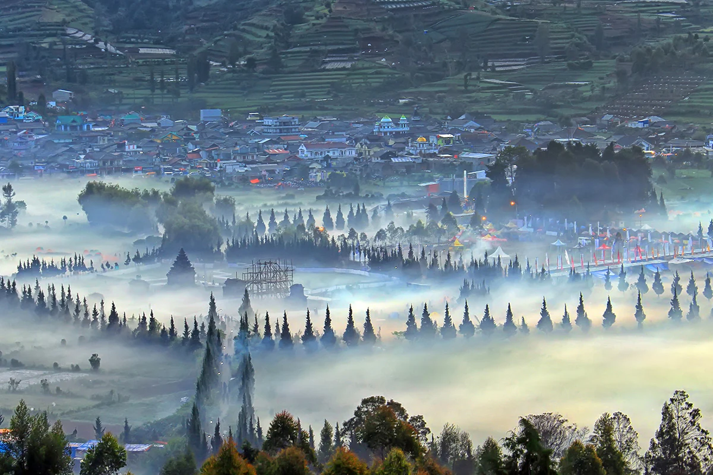
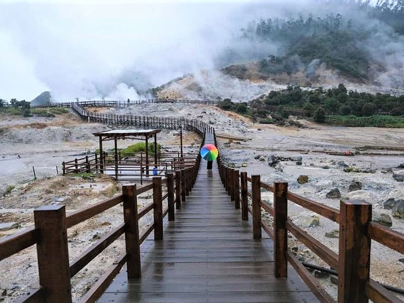
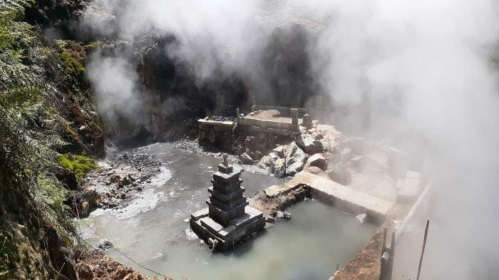
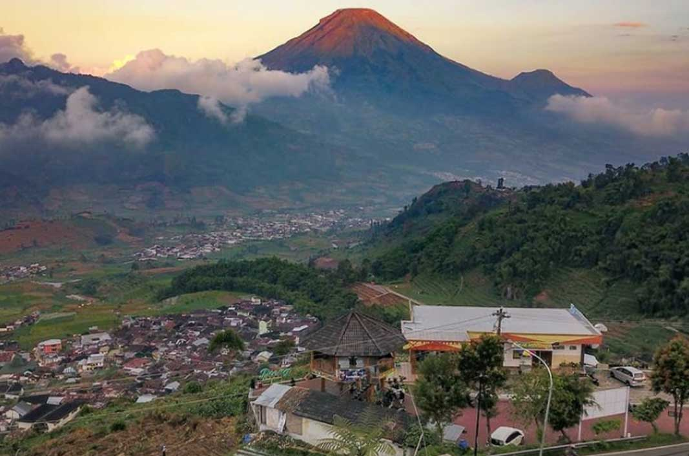

Dieng Plateau
Dataran Tinggi Dieng , Wonosobo , Jawa Tengah
Dieng Plateau, atau dataran tinggi Dieng, merupakan salah satu situs bersejarah paling terkenal di Jawa Tengah, Indonesia. Dataran ini sudah sangat akrab bagi masyarakat Indonesia, karena terkenal dengan pesona alamnya yang indah di Pulau Jawa, dikelilingi oleh pegunungan hijau dan hamparan awan yang memunculkan udara dingin yang segar.
Selain keindahan alamnya yang tak tertandingi, Dieng juga menyimpan banyak objek wisata geologi dan sejarah yang menarik untuk dikunjungi. Beberapa tempat wisata di Dieng antara lain kawah, telaga, dan kompleks kawasan Candi Hindu yang mampu menarik para wisatawan untuk kembali berkunjung. Keindahannya tidak hanya terkenal di dalam negeri, namun namanya juga telah meraih ketenaran hingga di luar negeri.
Iklim
Dataran Tinggi Dieng memiliki iklim tropis. Karena terletak pada ±2.000 meter di atas permukaan laut dan terhimpit oleh 4 gunung, udaranya cukup dingin. Pada musim kemarau di siang hari suhu berkisar antara 15o C – 10o C sedangkan pada malam hari suhu berkisar antara 5o C – 10o C , dan kadang-kadang mencapai 0o dan biasanya kondisi tersebut disebut “Bun Upas”, yaitu salju tipis atau embun yang menyapu dataran tinggi dengan suhu di bawah titik beku. Akan tetapi pada bulan Juni, Juli dan Agustus sirkulasi udara biasanya berganti musim. Maka dalam bulan-bulan tersebut suhu udarapun berubah.
Letak
Dieng terletak di sebelah barat Gunung Sindoro dan Gunung Sumbing, Dieng merupakan kawasan vulkanik aktif yang juga gunung api raksasa berbentuk dataran luas dengan panjang kurang lebih 9 mil (14 km) dan lebar 4 mil (6 km) memanjang dari arah barat daya-tenggara. Ketinggian Dieng mencapai 2000 Meter di atas permukaan laut.
Pariwisata
Fungsi utama wilayah Dataran Tinggi Dieng saat ini selain sebagai dataran pertanian dan perkebunan, juga merupakan daerah yang sedang dikembangkan dari sektor pariwisata dan pusat industri listrik tenaga panas atau geotermal.
Wilayah Dataran Tinggi Dieng diapit oleh bukit-bukit yang besar dan kecil, gunung-gunung yang diselingi lembah dan jurang dan curam, dihiasi oleh tumbuhan dan semak-semak dengan hawa dingin menjadikan dataran tinggi Dieng sebagai tempat wisata dengan pemandangan alam yang elok yang dapat memberikan perasaan tenang.
Potensi pariwisata di Dataran Tinggi Dieng cukup menonjol baik dalam lingkup regional, nasional, maupun internasional. Mengingat potensi kepariwisataan pada kawasan tersebut berupa perpaduan dari beberapa keajaiban alam dan peninggalan sejarah.
Kondisi kepariwisataan di wilayah Dataran Tinggi Dieng dapat dibedakan menjadi 2 kategori:
1. Wisata Alam
Objek wisata ini terbentuk secara alamiah dan bersifat wisata pegunungan. Jenis wisata alam Dataran Tinggi Dieng dapat difokuskan pada beberapa objek wisata seperti : kawah, telaga, pegunungan. Berikut beberapa objek wisata alam yang terkenal dan sering di kunjungi oleh wisatawan di Dieng :
Kawah Sikidang
Kawah ini adalah kawah vulkanik dengan lubang kepundan berada di daerah dataran sehingga kawah dengan luas sekitar 200 m2 serta terdapat pada tanah yang datar, sehingga dapat disaksikan langsung dari bibir kawah. Kawah Sikidang merupakan kawah aktif terbesar di dataran Tinggi Dieng. Sampai saat ini Kawah Sikidang masih aktif mengeluarkan uap panas sehingga air kawah mendidih dan bergolak. Bau khas pegunungan berapi, kepulan asap putih selalu menghiasi penampilan kawah ini. Uap panas yang keluar disertai semburan air yang mendidih berwarna kelabu selalu muncul berpindah-pindah dan melompat-lompat dari seperti seekor kidang.
Kawah Sikidang menarik untuk dijadikan sebagai objek wisata karena selain menyuguhkan pesona alam vulkanik juga terdapat beberapa daya tarik wisata buatan yang dikelola oleh masyarakat setempat seperti penyewaan sepeda motor, kuda, spot-spot foto, berfoto dengan binatang (burung hantu), flying fox dan merebus telur dengan air dari kawah.
| Hari | Jam Buka | Jam Tutup | Harga Tiket |
|---|---|---|---|
| Senin - Kamis | 06.00 WIB | 18.00 WIB | Rp 10.000 |
| Jum'at-Minggu | 06.00 WIB | 18.00 WIB | Rp 15.000 |
Kawah Candradimuka
Kawah Candradimuka adalah salah satu kawah Dieng yang terletak 7 km dari Dataran Tinggi Dieng. Kawah ini sebenarnya bukan kawah gunung berapi tetapi merupakan pemunculan solfatara dari rekahan tanah. Terdapat dua lubang rekahan yang masih aktif mengeluarkan solfatara, yang satu mengeluarkan secara terus menerus dan yang lainnya secara berselang.
Kawah Candradimuka masih belum banyak dikunjungi wisatawan, baik lokal maupun mancanegara karena jaraknya yang jauh dari Dataran Tinggi Dieng, fasilitas wisata yang belum lengkap dan minimnya akses jalan.
| Hari | Jam Buka | Jam Tutup | Harga Tiket |
|---|---|---|---|
| Senin - Kamis | 06.00 WIB | 18.00 WIB | Rp 10.000 |
| Jum'at-Minggu | 06.00 WIB | 18.00 WIB | Rp 15.000 |
2. Wisata Buatan
Objek wisata ini sengaja dibuat oleh manusia. Jenis wisata buatan Dataran Tinggi Dieng dapat difokuskan pada objek-objek wisata yang cukup terkenal seperti : kawasan candi, dan gardu pandang Tieng.
Kawasan Candi
.jpg)
Selain dikenal dengan wisata alamnya yang indah, kawasan Dieng plateau juga terdapat wisata sejarah berupa candi. Candi-candi tersebut merupakan peningalan sejarah agama Hindu. di komplek Candi, wisatawan juga disuguhkan pada hamparan rumput nan hijau dengan aneka tanaman bunga warna-warni yang tumbuh.
| Hari | Jam Buka | Jam Tutup | Harga Tiket |
|---|---|---|---|
| Senin - Kamis | 09.00 WIB | 18.00 WIB | Rp 15.000 |
| Jum'at-Minggu | 08.00 WIB | 18.00 WIB | Rp 22.000 |
Gardu Pandang Tieng
Tempat Wisata Gardu pandang Tieng merupakan sebuah bangunan yang terletak di tepi jalan raya di Kawasan Dieng. Bangunan ini dijadikan sebagai tempat untuk menikmati pemandangan di Kawasan Dieng yang sangat indah. Pemandangan dari spot ini sangat menarik terutama pada saat pagi hari yaitu pada waktu matahari terbit atau sunrise. Gardu Pandang di Dieng ini memiliki ketinggian sekitar 1700 mdpl. Dari tempat ini anda dapat melihat pemandangan Gunung Sindoro dan Gunung Kembang, serta hamparan lahan pertanian milik masyarakat yang terlihat subur.
| Hari | Jam Buka | Jam Tutup | Harga Tiket |
|---|---|---|---|
| Senin - Kamis | 09.00 WIB | 18.00 WIB | Rp 10 |
| Jum'at-Minggu | 08.00 WIB | 18.00 WIB | Rp 15.000 |